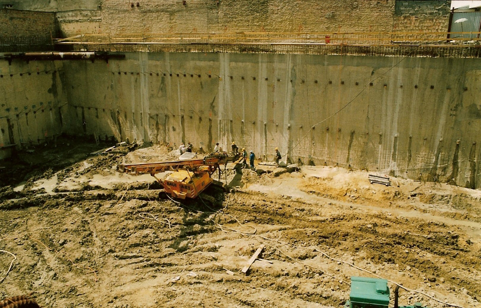

<article class="post2" id="1" itemprop="blogPost" itemscope itemtype="http://schema.org/BlogPosting">
    <div class="wrapper">
        <header>
            <h2 class="post-title" itemprop="name headline"><a href="/" class="post-link">Galeria</a></h2>
        </header>
        <section class="post-text" itemprop="articleBody text">

            <h2>Wieżowiec przy Placu Zawiszy:</h2>

            <div class="my-gallery" itemscope itemtype="http://schema.org/ImageGallery">

                <figure itemprop="associatedMedia" itemscope itemtype="http://schema.org/ImageObject">
                    <a href="/img/zyciorys/budynek1.jpg" itemprop="contentUrl" data-size="357x520">
                        
                    </a>
                    <figcaption itemprop="caption description">Wieżowiec Reform Plaza - plac Zawiszy w Warszawie</figcaption>

                </figure>

                <figure itemprop="associatedMedia" itemscope itemtype="http://schema.org/ImageObject">
                    <a href="/img/zyciorys/budynek4.jpg" itemprop="contentUrl" data-size="360x520">
                        
                    </a>
                    <figcaption itemprop="caption description">Reform Plaza - od Alei Jerozolimskich</figcaption>
                </figure>

                <figure itemprop="associatedMedia" itemscope itemtype="http://schema.org/ImageObject">
                    <a href="/img/zyciorys/budynek2.jpg" itemprop="contentUrl" data-size="789x520">
                        
                    </a>
                    <figcaption itemprop="caption description">Wieżowiec Reform Plaza - konstrukcja kolejnej kondygnacji 2000 m2 wykonywanej w lecie w 5 dni, w zimie w 7 dni</figcaption>
                </figure>

                <figure itemprop="associatedMedia" itemscope itemtype="http://schema.org/ImageObject">
                    <a href="/img/zyciorys/budynek3.jpg" itemprop="contentUrl" data-size="810x520">
                        
                    </a>
                    <figcaption itemprop="caption description">Kotwienie ścian szczelinowych na ostrą granicę z sąsiadem'</figcaption>
                </figure>

                <figure itemprop="associatedMedia" itemscope itemtype="http://schema.org/ImageObject">
                    <a href="/img/zyciorys/budynek5.jpg" itemprop="contentUrl" data-size="821x520">
                        
                    </a>
                    <figcaption itemprop="caption description">Betonowanie latem</figcaption>
                </figure>


            </div>

            <h2>Inne:</h2>

            <div class="my-gallery" itemscope itemtype="http://schema.org/ImageGallery">


                <figure itemprop="associatedMedia" itemscope itemtype="http://schema.org/ImageObject">
                    <a href="/img/zyciorys/20090821114040.jpg" itemprop="contentUrl" data-size="797x520">
                        
                    </a>
                    <figcaption itemprop="caption description">Apartamentowce SERWBUD na Bemowie w Warszawie</figcaption>
                </figure>

                <figure itemprop="associatedMedia" itemscope itemtype="http://schema.org/ImageObject">
                    <a href="/img/zyciorys/20090821114141.jpg" itemprop="contentUrl" data-size="768x520">
                        
                    </a>
                    <figcaption itemprop="caption description">Betonowanie zimą</figcaption>
                </figure>

                <figure itemprop="associatedMedia" itemscope itemtype="http://schema.org/ImageObject">
                    <a href="/img/zyciorys/20090821114336.jpg" itemprop="contentUrl" data-size="779x520">
                        
                    </a>
                    <figcaption itemprop="caption description">Moje biuro</figcaption>
                </figure>

                <figure itemprop="associatedMedia" itemscope itemtype="http://schema.org/ImageObject">
                    <a href="/img/zyciorys/20090821114417.jpg" itemprop="contentUrl" data-size="755x520">
                        
                    </a>
                    <figcaption itemprop="caption description">Elewacja z płyt marmuru carrara wtórnie skrystalizowanego grubości 8 mm, z dokładnością mniejszą niż 30mm na wysokości 120m</figcaption>
                </figure>

                <figure itemprop="associatedMedia" itemscope itemtype="http://schema.org/ImageObject">
                    <a href="/img/zyciorys/20090821114438.jpg" itemprop="contentUrl" data-size="361x520">
                        
                    </a>
                    <figcaption itemprop="caption description">Wysoki standard wykończenia (marmury z Itali i z Namibi, granity brazylijskie i włoskie stale kwasoodporne od Szadkowskiego z Krakowa)</figcaption>
                </figure>

                <figure itemprop="associatedMedia" itemscope itemtype="http://schema.org/ImageObject">
                    <a href="/img/zyciorys/20090821114504.jpg" itemprop="contentUrl" data-size="347x520">
                        
                    </a>
                    <figcaption itemprop="caption description">26 metrów pod ziemią (na ostrą granicę z sąsiadami i Alejami Jerozolimskimi), 116 metrów nad ziemią w 40 miesięcy za 60 milionów dolarów. Bez wypadków BHP śmiertelnych i ciężkich</figcaption>
                </figure>

                <figure itemprop="associatedMedia" itemscope itemtype="http://schema.org/ImageObject">
                    <a href="/img/zyciorys/20090821114533.jpg" itemprop="contentUrl" data-size="698x520">
                        
                    </a>
                    <figcaption itemprop="caption description">Apartamentowce CATALINY na Wyścigach w Warszawie</figcaption>
                </figure>

                <figure itemprop="associatedMedia" itemscope itemtype="http://schema.org/ImageObject">
                    <a href="/img/zyciorys/20090821114555.jpg" itemprop="contentUrl" data-size="1045x552">
                        
                    </a>
                    <figcaption itemprop="caption description">Wieżowce Warszawy - na pierwszym planie Platinium Towers ATLASu - nad nimi jasno-niebieski Reform Plaza (dziś Millennium)</figcaption>
                </figure>

                <figure itemprop="associatedMedia" itemscope itemtype="http://schema.org/ImageObject">
                    <a href="/img/zyciorys/20090821114621.jpg" itemprop="contentUrl" data-size="1063x510">
                        
                    </a>
                    <figcaption itemprop="caption description">Warszawa A.D. 2008</figcaption>
                </figure>

                <figure itemprop="associatedMedia" itemscope itemtype="http://schema.org/ImageObject">
                    <a href="/img/zyciorys/20090821114713.jpg" itemprop="contentUrl" data-size="1000x1370">
                        
                    </a>
                    <figcaption itemprop="caption description">Akt nadania</figcaption>
                </figure>

                <figure itemprop="associatedMedia" itemscope itemtype="http://schema.org/ImageObject">
                    <a href="/img/zyciorys/20090826120225.jpg" itemprop="contentUrl" data-size="810x506">
                        
                    </a>
                    <figcaption itemprop="caption description">Moja góralska chaupa na Olczańskim Wierchu. Zrealizowana w 3 miesiące - z wykończeniem rok</figcaption>
                </figure>

            </div>


            <!-- Root element of PhotoSwipe. Must have class pswp. -->
            <div class="pswp" tabindex="-1" role="dialog" aria-hidden="true">

                <!-- Background of PhotoSwipe.
                     It's a separate element, as animating opacity is faster than rgba(). -->
                <div class="pswp__bg"></div>

                <!-- Slides wrapper with overflow:hidden. -->
                <div class="pswp__scroll-wrap">

                    <!-- Container that holds slides. PhotoSwipe keeps only 3 slides in DOM to save memory. -->
                    <!-- don't modify these 3 pswp__item elements, data is added later on. -->
                    <div class="pswp__container">
                        <div class="pswp__item"></div>
                        <div class="pswp__item"></div>
                        <div class="pswp__item"></div>
                    </div>

                    <!-- Default (PhotoSwipeUI_Default) interface on top of sliding area. Can be changed. -->
                    <div class="pswp__ui pswp__ui--hidden">

                        <div class="pswp__top-bar">

                            <!--  Controls are self-explanatory. Order can be changed. -->

                            <div class="pswp__counter"></div>

                            <button class="pswp__button pswp__button--close" title="Close (Esc)"></button>

                            <button class="pswp__button pswp__button--share" title="Share"></button>

                            <button class="pswp__button pswp__button--fs" title="Toggle fullscreen"></button>

                            <button class="pswp__button pswp__button--zoom" title="Zoom in/out"></button>

                            <div class="pswp__preloader">
                                <div class="pswp__preloader__icn">
                                    <div class="pswp__preloader__cut">
                                        <div class="pswp__preloader__donut"></div>
                                    </div>
                                </div>
                            </div>
                        </div>

                        <div class="pswp__share-modal pswp__share-modal--hidden pswp__single-tap">
                            <div class="pswp__share-tooltip"></div>
                        </div>

                        <button class="pswp__button pswp__button--arrow--left" title="Previous (arrow left)">
                        </button>

                        <button class="pswp__button pswp__button--arrow--right" title="Next (arrow right)">
                        </button>

                        <div class="pswp__caption">
                            <div class="pswp__caption__center"></div>
                        </div>

                    </div>

                </div>

            </div>


            <script>
                var initPhotoSwipeFromDOM = function(gallerySelector) {

                    // parse slide data (url, title, size ...) from DOM elements
                    // (children of gallerySelector)
                    var parseThumbnailElements = function(el) {
                        var thumbElements = el.childNodes,
                                numNodes = thumbElements.length,
                                items = [],
                                figureEl,
                                linkEl,
                                size,
                                item;

                        for(var i = 0; i < numNodes; i++) {

                            figureEl = thumbElements[i]; // <figure> element

                            // include only element nodes
                            if(figureEl.nodeType !== 1) {
                                continue;
                            }

                            linkEl = figureEl.children[0]; // <a> element

                            size = linkEl.getAttribute('data-size').split('x');

                            // create slide object
                            item = {
                                src: linkEl.getAttribute('href'),
                                w: parseInt(size[0], 10),
                                h: parseInt(size[1], 10)
                            };


                            if(figureEl.children.length > 1) {
                                // <figcaption> content
                                item.title = figureEl.children[1].innerHTML;
                            }

                            if(linkEl.children.length > 0) {
                                //  thumbnail element, retrieving thumbnail url
                                item.msrc = linkEl.children[0].getAttribute('src');
                            }

                            item.el = figureEl; // save link to element for getThumbBoundsFn
                            items.push(item);
                        }

                        return items;
                    };

                    // find nearest parent element
                    var closest = function closest(el, fn) {
                        return el && ( fn(el) ? el : closest(el.parentNode, fn) );
                    };

                    // triggers when user clicks on thumbnail
                    var onThumbnailsClick = function(e) {
                        e = e || window.event;
                        e.preventDefault ? e.preventDefault() : e.returnValue = false;

                        var eTarget = e.target || e.srcElement;

                        // find root element of slide
                        var clickedListItem = closest(eTarget, function(el) {
                            return (el.tagName && el.tagName.toUpperCase() === 'FIGURE');
                        });

                        if(!clickedListItem) {
                            return;
                        }

                        // find index of clicked item by looping through all child nodes
                        // alternatively, you may define index via data- attribute
                        var clickedGallery = clickedListItem.parentNode,
                                childNodes = clickedListItem.parentNode.childNodes,
                                numChildNodes = childNodes.length,
                                nodeIndex = 0,
                                index;

                        for (var i = 0; i < numChildNodes; i++) {
                            if(childNodes[i].nodeType !== 1) {
                                continue;
                            }

                            if(childNodes[i] === clickedListItem) {
                                index = nodeIndex;
                                break;
                            }
                            nodeIndex++;
                        }


                        if(index >= 0) {
                            // open PhotoSwipe if valid index found
                            openPhotoSwipe( index, clickedGallery );
                        }
                        return false;
                    };

                    // parse picture index and gallery index from URL (#&pid=1&gid=2)
                    var photoswipeParseHash = function() {
                        var hash = window.location.hash.substring(1),
                                params = {};

                        if(hash.length < 5) {
                            return params;
                        }

                        var vars = hash.split('&');
                        for (var i = 0; i < vars.length; i++) {
                            if(!vars[i]) {
                                continue;
                            }
                            var pair = vars[i].split('=');
                            if(pair.length < 2) {
                                continue;
                            }
                            params[pair[0]] = pair[1];
                        }

                        if(params.gid) {
                            params.gid = parseInt(params.gid, 10);
                        }

                        return params;
                    };

                    var openPhotoSwipe = function(index, galleryElement, disableAnimation, fromURL) {
                        var pswpElement = document.querySelectorAll('.pswp')[0],
                                gallery,
                                options,
                                items;

                        items = parseThumbnailElements(galleryElement);

                        // define options (if needed)
                        options = {

                            // define gallery index (for URL)
                            galleryUID: galleryElement.getAttribute('data-pswp-uid'),

                            getThumbBoundsFn: function(index) {
                                // See Options -> getThumbBoundsFn section of documentation for more info
                                var thumbnail = items[index].el.getElementsByTagName('img')[0], // find thumbnail
                                        pageYScroll = window.pageYOffset || document.documentElement.scrollTop,
                                        rect = thumbnail.getBoundingClientRect();

                                return {x:rect.left, y:rect.top + pageYScroll, w:rect.width};
                            }

                        };

                        // PhotoSwipe opened from URL
                        if(fromURL) {
                            if(options.galleryPIDs) {
                                // parse real index when custom PIDs are used
                                // http://photoswipe.com/documentation/faq.html#custom-pid-in-url
                                for(var j = 0; j < items.length; j++) {
                                    if(items[j].pid == index) {
                                        options.index = j;
                                        break;
                                    }
                                }
                            } else {
                                // in URL indexes start from 1
                                options.index = parseInt(index, 10) - 1;
                            }
                        } else {
                            options.index = parseInt(index, 10);
                        }

                        // exit if index not found
                        if( isNaN(options.index) ) {
                            return;
                        }

                        if(disableAnimation) {
                            options.showAnimationDuration = 0;
                        }

                        // Pass data to PhotoSwipe and initialize it
                        gallery = new PhotoSwipe( pswpElement, PhotoSwipeUI_Default, items, options);
                        gallery.init();
                    };

                    // loop through all gallery elements and bind events
                    var galleryElements = document.querySelectorAll( gallerySelector );

                    for(var i = 0, l = galleryElements.length; i < l; i++) {
                        galleryElements[i].setAttribute('data-pswp-uid', i+1);
                        galleryElements[i].onclick = onThumbnailsClick;
                    }

                    // Parse URL and open gallery if it contains #&pid=3&gid=1
                    var hashData = photoswipeParseHash();
                    if(hashData.pid && hashData.gid) {
                        openPhotoSwipe( hashData.pid ,  galleryElements[ hashData.gid - 1 ], true, true );
                    }
                };

                // execute above function
                initPhotoSwipeFromDOM('.my-gallery');
            </script>


        </section>
    </div>
</article>
